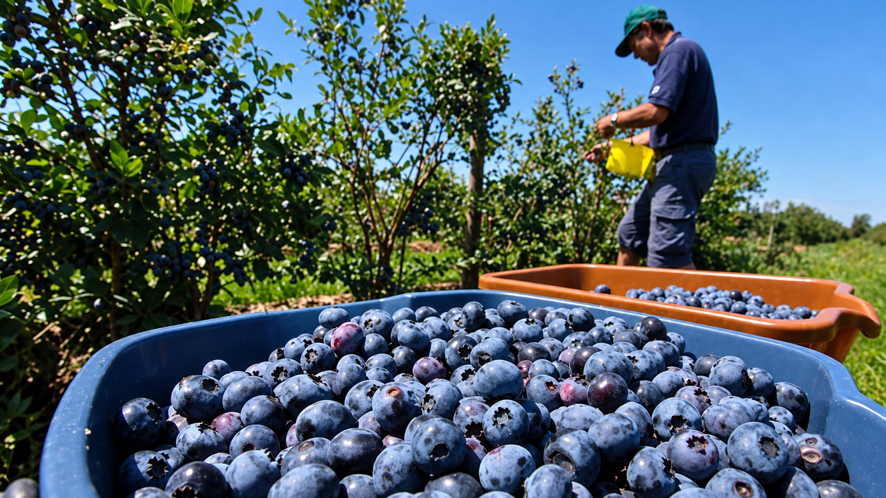

🌱
1. Registra
Guarda información sobre origen, fundo, variedad, cosecha y producción.
NECHDATA centraliza la información de cada lote de fruta, desde su origen en campo hasta su destino.

NECHDATA organiza información dispersa para facilitar su consulta y seguimiento.
Guarda información sobre origen, fundo, variedad, cosecha y producción.
Integra calidad, packing, poscosecha, documentos y recorrido del lote.
Accede a una ficha digital del lote y comparte información mediante NFC.
Reconstruye rápidamente la historia de un lote.
Centraliza parámetros de calidad y poscosecha.
Organiza certificados y documentos asociados.
Facilita información para compradores y consumidores.
NECHDATA nace como una propuesta para resolver un problema frecuente del sector agroexportador: la información de los lotes suele encontrarse dispersa entre hojas de cálculo, etiquetas, documentos, certificados y distintos actores de la cadena.
Nuestro propósito es hacer visible, ordenada y accesible la historia de cada lote de fruta.
“Cada lote tiene una historia, y nosotros buscamos hacerla visible.”